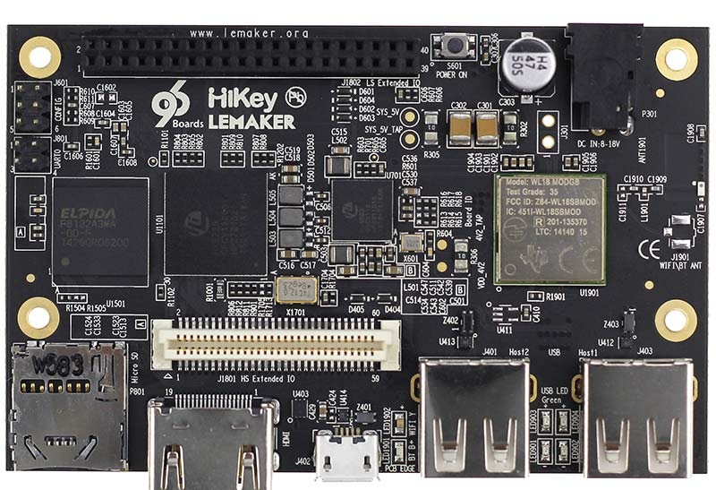

In this document
You can create builds for Nexus devices using Android Open Source Project (AOSP) builds and the relevant hardware-specific binaries. For available Android builds and targeted Nexus devices, see Source Code, Tags, and Builds.
Note: Due to hardware differences, do not use Android 4.1.1 on a Nexus 7 originally sold with Android 4.1.2 or newer.
You can also create builds for the HiKey Android reference board (described below). Reference boards are designed to help non-Nexus component vendors develop and port drivers to Android releases. Using a reference board can ease upgrade efforts, reduce time-to-market for new Android devices, lower device costs by enabling ODM/OEMs to choose from a wider range of compatible components, and increase the speed of innovation among component suppliers.
HiKey boards
Google supports HiKey, a certified 96Board, as an Android reference board. AOSP provides kernel source and board support for HiKey to enable developers to easily create and debug new and existing peripheral drivers, do kernel development, and perform other tasks with fewer OEM encumbrances.
HiKey boards are available in 1GB RAM and 2GB RAM configurations from Lenovator:
Figure 1. HiKey board by Lenovator
Additional resources:
Running Android on HiKey
Use the following commands to download, build, and run Android on a HiKey board.
Compiling userspace
- Download the Android source tree:
$ repo init -u https://android.googlesource.com/platform/manifest -b master
$ repo sync -j24 - Download and extract HDMI binaries into the Android source tree:
$ wget https://dl.google.com/dl/android/aosp/linaro-hikey-20160226-67c37b1a.tgz
$ tar xzf linaro-hikey-20160226-67c37b1a.tgz
$ ./extract-linaro-hikey.sh - Install mcopy utility:
$ apt-get install mtools - Build:
$ . ./build/envsetup.sh
$ lunch hikey-userdebug
$ make -j32
Note: For 4GB eMMC, instead of $ make -j32
use: $ make -j32 TARGET_USERDATAIMAGE_4GB=true.
Installing initial fastboot and ptable
- Select special bootloader mode by linking J15 1-2 and 3-4 pins (for details, refer to the HiKey User Guide).
- Connect USB to PC to get ttyUSB device (ex:
/dev/ttyUSB1). - Power the board:
$ cd device/linaro/hikey/installer
$ ./flash-all.sh /dev/ttyUSB1 [4g] - Remove jumper 3-4 and power the board.
Flashing images
- Enter fastboot mode by linking J15 1-2 and 5-6 pins.
- Run the following commands:
$ fastboot flash boot out/target/product/hikey/boot.img
$ fastboot flash -w system out/target/product/hikey/system.img - Remove jumper 5-6 and power the board.
Building the kernel
- Run the following commands:
$ git clone https://android.googlesource.com/kernel/hikey-linaro
$ cd hikey-linaro
$ git checkout -b android-hikey-linaro-4.4 origin/android-hikey-linaro-4.4
$ make ARCH=arm64 hikey_defconfig
$ make ARCH=arm64 CROSS_COMPILE=aarch64-linux-android- -j24 - Copy output to the hikey kernel directory
(
/kernel/hikey-linaro):- Copy hi6220-hikey.dtb
(
arch/arm64/boot/dts/hisilicon/hi6220-hikey.dtb) to the hikey-kernel directory. - Copy the Image file
(arch/arm64/boot/Image-dtb) to the hikey-kernel directory. - Make the boot image:
$ make bootimage -j24
- Copy hi6220-hikey.dtb
(
Setting monitor resolution
Edit device/linaro/hikey/BoardConfig.mk parameter
BOARD_KERNEL_CMDLINE and configure the video setting.
Example setting for a 24" monitor: video=HDMI-A-1:1280x800@60.
Configuring kernel serial output (uart3)
Set the J2 low speed expansion connector to 1 - Gnd, 11 - Rx, 13 - Tx . For details, refer to the HiKey User Guide).